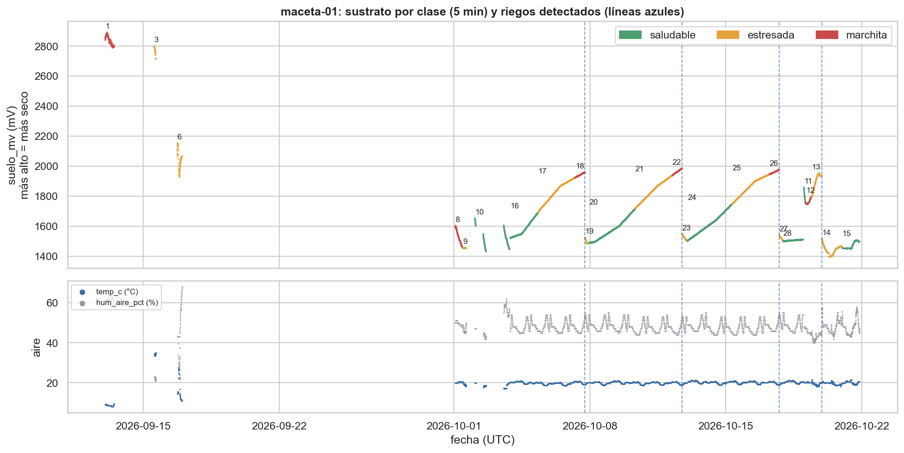
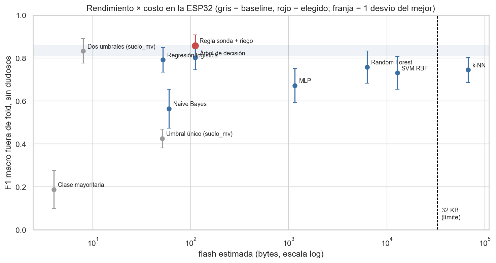
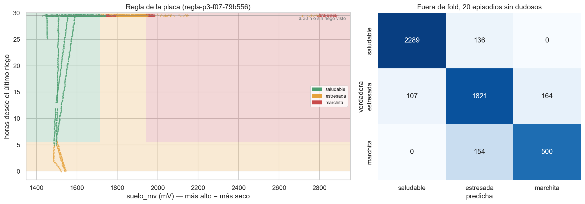

1. Objetivo y sistema
Una ESP32 mide cada 5 minutos un lirio de paz con una sonda resistiva de humedad del sustrato, un DHT11 (temperatura y humedad del aire) y un LDR (luz), y publica cada muestra en un backend propio (Postgres en Railway). Con esos datos se entrenó un clasificador de tres clases que corre en la placa: 1 saludable (turgente, LED verde), 2 estresada (marchitez transitoria, amarillo) y 3 marchita (marchitez franca, rojo). Cada 5 minutos la placa lee, arma las features, predice y prende el LED; la inferencia no depende del WiFi.
2. Datos y preparación
Se usó el dataset de la Tarea 1 en su versión del 23/10: 21.850 filas de una sola maceta, del 12/09 al 22/10. Cada vez que alguien observa la planta registra la clase con un botón; las muestras siguientes heredan esa etiqueta hasta la próxima observación y forman un episodio. Preparación: hora NTP de la placa, remuestreo a 5 minutos con la mediana (parte de la serie llegó cada 30 s), descarte de la primera hora tras cada arranque (transitorio de la sonda), de la sonda saturada y de las filas sin episodio. Los huecos no se interpolan. Quedan 5.663 filas en 24 episodios (7 saludable, 11 estresada, 6 marchita). Cuatro episodios son dudosos (la etiqueta contradice a la sonda o se heredó sin que nadie mirara la planta): se excluyen del entrenamiento y las métricas se reportan con y sin ellos.

estresada, marchita, riego, unas horas de estresada con el sustrato ya mojado y vuelta a saludable.Features (mismo código en Python y C++, con test de paridad): con la lectura actual y un buffer de 13 muestras (1 h) se arman suelo_mv, suelo_delta_1h, temp_c, hum_aire_pct, vpd_kpa, luz_mv, luz_media_1h y h_desde_riego: horas desde el último riego, que la placa detecta como una caída de la sonda de 250 mV o más entre dos muestras (fuera de la primera hora tras un arranque) y guarda en memoria no volátil. La luz no entra a ningún modelo: todas las marchitas de septiembre se observaron de noche y el modelo aprendía "oscuro → marchita". El target son los códigos 1–3 del firmware; las columnas que delatan la etiqueta (origen, episodio, hora) se descartan antes de entrenar.
3. Evaluación y comparación de modelos
Las muestras contiguas comparten etiqueta y son casi iguales: un Random Forest da 0,99 de exactitud balanceada con un split aleatorio y 0,75 separando episodios. Por eso se usó StratifiedGroupKFold (5 folds) por episodio, búsqueda de hiperparámetros anidada también por episodio, métricas sobre las predicciones fuera de fold juntas y desvío por bootstrap de episodios. Cada candidato elige su subconjunto de features (siempre con la sonda, nunca con la luz).
Cuadro 1: Fuera de fold, 20 episodios sin dudosos. Costo estimado en la ESP32 (240 MHz).
| Modelo | F1 macro | Exact. bal. | Recall marchita | Flash / µs |
|---|---|---|---|---|
| Regla sonda + riego | 0,858 ± 0,049 | 0,860 | 0,77 | 111 B / 0,3 |
| Dos umbrales sobre la sonda (baseline) | 0,833 ± 0,057 | 0,834 | 0,77 | 8 B / 0,1 |
| Árbol de decisión | 0,801 ± 0,055 | 0,815 | 0,74 | 111 B / 0,2 |
| Regresión logística | 0,791 ± 0,057 | 0,827 | 0,85 | 52 B / 4 |
| Random Forest (30 árboles) | 0,758 ± 0,075 | 0,753 | 0,56 | 6,1 KB / 11 |
| k-NN | 0,744 ± 0,058 | 0,734 | 0,49 | 66 KB / 2.370 |
| SVM RBF | 0,731 ± 0,077 | 0,756 | 0,66 | 12,5 KB / 981 |
| MLP | 0,672 ± 0,079 | 0,663 | 0,30 | 1,1 KB / 26 |
| Naive Bayes | 0,564 ± 0,090 | 0,561 | 0,14 | 60 B / 4 |
| Clase mayoritaria (baseline) | 0,188 ± 0,089 | 0,203 | 0,00 | 4 B / 0 |

Los modelos flexibles (RF, k-NN, SVM, MLP) rinden menos que las reglas simples: con 20 episodios no hay de dónde aprender más. Las variables del aire casi no aportan: en octubre el aire se movió entre 18 y 21 °C y entre 42 y 57 % de humedad. En un mismo árbol, la sonda sola da 0,71 y sumarle la humedad del aire, 0,77; ese aporte sale del radiador de septiembre.
4. Modelo elegido y su lógica en la ESP32
Criterio, fijado antes de comparar: (1) menos de 32 KB de flash, menos de 1 ms por predicción y sin memoria dinámica (queda afuera el k-NN); (2) F1 macro dentro de un desvío del mejor (piso 0,809); (3) desempate por interpretabilidad. Sólo la regla sonda + riego pasa el piso: le gana a la regla de dos umbrales en el 98 % de las remuestras y al árbol en el 99 %. Fuera de fold, con todos los episodios, da F1 macro 0,795 y ROC-AUC 0,83.

saludable se predice marchita ni al revés.Pseudocódigo de plantaia_predecir (regla-p3-f07-79b556, exportado a tablas static const en modelo_plantaia.h, 111 B, a lo sumo 3 comparaciones):
// cada 5 min: x[8] = features(buffer de 13 muestras, hora NTP, último riego)
if (x[H_DESDE_RIEGO] <= 5.5f) return ESTRESADA; // LED amarillo: se está recuperando
if (x[SUELO_MV] <= 1716f) return SALUDABLE; // LED verde
if (x[SUELO_MV] <= 1940f) return ESTRESADA; // LED amarillo
return MARCHITA; // LED rojo: hay que regar
5. Implementación y pruebas
Un script reentrena el modelo elegido y genera el header C y los vectores de prueba. El firmware 2.1.0 hace, cada 5 minutos: leer los sensores (mediana de 9), empujar la muestra al buffer circular, detectar el riego, armar el vector de 8 features, predecir, prender el LED y mandar clase, probabilidades y versión del modelo en el POST. Si nunca respondió el DHT11 no se predice y los LEDs quedan apagados. Los 23 tests de host pasan: paridad Python↔C del 100 % en 336 vectores del modelo (incluidos los puntos pegados a cada umbral) y en 190 muestras de features con reinicios, huecos, faltantes y un riego real.
Log del replay en host con el mismo código de la placa, sobre el 19/10 (la sonda cae 418 mV en el riego de las 22:40 y la clase pasa a saludable a las 5,6 h):
[INF] n=104 warmup=0 x=[1934,-2,20.2,53,1.11,1777,1418,96.0] -> estresada p=[0.04,0.88,0.08] t_us=0
[INF] n=105 warmup=0 x=[1516,-420,20.6,53,1.14,1792,1522,0.0] -> estresada p=[0.07,0.93,0.00] t_us=0
[INF] n=171 warmup=0 x=[1438,-9,20.2,49,1.21,142,142,5.5] -> estresada p=[0.07,0.93,0.00] t_us=0
[INF] n=172 warmup=0 x=[1438,-8,20.2,49,1.21,142,142,5.6] -> saludable p=[0.98,0.02,0.00] t_us=0
LOG DE LA PLACA — se completa al flashear el firmware 2.1.0
6. Discusión y conclusión
Ventajas. El modelo se lee entero en cuatro líneas, usa la sonda y una variable temporal que la placa calcula con un contador, ocupa 111 B y predice en microsegundos. La predicción casi no depende de la hora del día (V de Cramér 0,13). Sobre 272 muestras sin etiqueta del 21–22/10 dio saludable el 100 % del tiempo.
Memoria y CPU. El firmware usa el 73,5 % de la flash (962 KB de 1,31 MB) y el 14,6 % de la RAM. El límite de esta entrega fueron los datos, no el hardware: hasta el Random Forest entraba.
Limitaciones. (1) El corte de 5,5 h puede ser el horario del observador: en los tres ciclos la observación saludable llegó 5–6 h después del riego. (2) Hay 3 recuperaciones observadas y 13 de los 24 episodios son de las mismas dos semanas. (3) La sonda resistiva deriva por corrosión (la marchita pasó de ~2830 a ~1950 mV entre septiembre y octubre), así que los cortes valen para la escala actual. (4) No reconoce la marchita nocturna del 19/10 (1758 mV). (5) Varias decisiones (la feature de riego, entrenar sin dudosos, no exigir variables del aire) se tomaron mirando resultados, así que las métricas son algo optimistas.
Mejoras. Observar recuperaciones a horarios distintos, con fotos de la ESP32-CAM; calibrar la sonda cada semana o pasar a una capacitiva; y guardar las predicciones en el backend para evaluar el modelo en línea con observaciones nuevas.